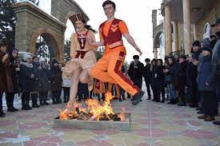
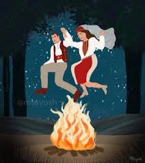

ՏՅԱՌՆԸՆԴԱՌԱՋ
 Տոնի պաշտոնական' Տյառնընդառաջ անունը բացատրվում է Քրիստոսի կենսագրության այն իրողությամբ, որ հրեական օրենքի համաձայն' Փրկչի ծննդյան քառասուներորդ օրը նրա ծնողները' Մարիամն ու Հովսեփը, որդուն տաճար տարան: Այստեղ նրան ընդառաջ Եկավ խոր ծերության հասած և տիրոջ գալստյանն սպասող Սիմեօն ծերունին, որտեղից և տոնի անունը' ՏՅԱՌՆԸՆԴԱՌԱՋ , Տիրոջն ընդառաջ: Տոնական հանդիսությունները, սակայն, ունեն հնագույն ավանդույթներ և առնչվում Են կրակի մաքրագործող զորության հանդեպ ունեցած հավատի իետ: Նշվում է փետրվարի 14-ին, և Տյառնընդառաջին վառվող խարույկը գարնան ավետաբերի խորհրդանշական դերն է կատարում: Այն պատկերացումը կար, որ «Տըրընդեզի կրակը իր հետ բերում էր օդի բարեխառնություն, հունձքի առատություն, արտերի բերրիություն և ամուսինների օրհնություն»: Ահա այս գաղափարների շուրջն էլ կառուցված էին տոնական արարողությունները: Տյառնընդառաջի հիմնական ծեսը, հիրավի, խարույկ վառելն էր: Որոշ տեղեր խարույկը վառում էին միայն եկեղեցու բակում, այլ վայրերում' բոլոր տների բակերում, երրորդներում' միայն նշանված աղջիկների և նորապսակ ունեցող ընտանիքների բակերում: Բոլոր դեպքերում խարույկի փայտը կամ այլ վառելիքը բերում էին նշանված ու նորապսակ երիտասարդները, ընդ որում բերում էին բուն տոնի օրը: Առաջինը, քահանայի օրհնությունից հետո, վառում էին եկեղեցու բակի մեծ խարույկը: Կրակը վառելու պատվավոր իրավունքը նորւսպսակ, այդ տարի ամուսնացած նորափեսաներինն էր. եթե գյուղում նույնիսկ 10 նորսսփեսա լիներ' բոլորն էլ պետք է մասնակցեին կրակը վառելու արարողությանը, պայմանով, որ յուրաքանչյուրը որևէ ընծա տար եկեղեցուն: Հավաքվածներն ուշադիր հետևում էին խարույկի ծխի ուղղությանը, այն ցույց էր տալիս այդ տարվա առավել բերքառատ գոտին: Այս մեծ, գլխավոր խարույկից մասնակիցները խանձողներ էին տանում, որով վառում էին բակերի խարույկները:Կրակ անհրաժեշտ էր վառել հատկապես նշանված կամ այդ տարի պսակված հարսնացուի կամ հարսի բակում, որոնց կեսուրները հարսին պետք է «կրակին ցույց տային»: Եթե հարսնացուն դեռևս հոր տանն էր, կեսուրը Տյառնընդառաջի առավոտյան նրան «փայ» էր ուղարկում, որ սովորաբար բաղկացած էր լինում աղանձից, զանազան ընկուզեղեններից, մրգեղենից, չամիչից, շաքարից և որևէ զարդից: Երեկոյան, եկեղեցու կրակից հետո, կեսուրը իր ազգական կանանց հետ այցելում էր հարսնացուի տուն և ինքն ուղեկցում հարսնացուին կրակի շուրջը պտտվելու: Խարույկի շուրջը նախ պտտվում էին նորապսակ զույգերը:Կրակի վրայով նախ թռչում էր տան ամենատարեց կինը' որպեսզի իր «տունը ազատի չարքերից», ապա սկսում էին թռչել երիտասարդները, երեխաները: Կրակի վրայով թռչում էին նաև ամուլ կանայք, նոր ծննդաբերած, քառասունքը դեռ չլրացած կանայք:Առհասարակ Տյառնընդառաջը «կտրում էր» բոլոր քառասունքները: Կրակի մոտ էին դուրս բերում նաև հիվանդներին, և սրանք էլ իրենց հերթին էին ենթարկվում խարույկի մաքրագործող, հզոր ուժին:Կրակի վրայով թռչելու ժամանակ Եթե չամուսնացած աղջկա շորի ծայրը վառվում էր, նշանակում էր, որ աղջիկն այդ տարի կամուսնանար: Կրակի վրայով թռչողները տարբեր երգեր էին երգում կամ, ավելի շուտ, տարբեր իղձեր արտահայտում ու մաղթանքներ անում: Կրակի մոտ շատերը փոխինդ էին շաղախում մեղրով, դոշաբով: Տարեկան երկու անգամ' Տյառնընդառաջին և Ս.Սարգսին շաղախած փոխինդ ճաշակելը ուղղակի անհրաժեշտություն էր: Խարույկը մարելու հետ նորապսակ ունեցող ընտանիքների բակերում սկսվում էին պարերը, ու մինչ երիտասարդները զուռնա-դհոլի նվագի տակ պարում էին, մյուսները բակի խարույկից թիակով կամ մի ամանով կրակ էին վերցնում և տան շուրջը պտտեցնում: Տանտերեն այդ խանձողներից պահում էին Ա Զատիկի թաթախման երեկոյան դնում կաթնովի այն ճաշատեսակի տակ, որով պիտի թաթախվի: Տյառնընդառաջի տոնը հանում էր նաև նորափեսայի' աներոջ տուն այցելելու արգելքը:Այդ երեկո նորափեսաներն իրենց ծնողների հետ մրգեղենի սկուտեղներով այցելում էին աներոջ տուն: Երեկոյան մանկահասակ երեխաներին մայրերը եկեղեցի էին տանում: Համարվում էր, որ Տյառնընդառաջի երեկոյան ծնված երեխան շատ չար ու կրակոտ է լինում, որովհետև «կրակի հետ է ծնվել»: Այդ օրն ու Զատիկին ծնված տղաներին լուս-պարոն, աղջիկներին' լուս-խաթուն էին ասում:Նվագածուները շրջում էին խնջույքի հավաքված խմբերի մեջ, երգեր երգում, խնջույքի մասնակիցները միանում էին նրանց, արձագանքում նրանց երգերին:
ՊԱՐԵՐԳԵՐ
Ես աս գիշեր դուրս ելայ,
Մութ գիշեր, չիկա յ լուսնկայ,
Իմ Եարս ալ' վարէն ի վեր,
Ձեռքն ի կայ ոսկուն մաշալա:
Թեւես բռնեց, ներս տարաւ,
Դուռ դրաւ, ախիկն ի վրան,
Փռեց սէրէսէր խալի,
Ուր գործած տասուերկու տարի:
Ձգեց խուշ թիւյի տօշակ,
Աէրէսէր բարձերն ի վրան,
Փըռեց սէրէսէր եաթախ,
Սռմալու վերմակն ի վրան,
Խուշ թիւյիվ բ,արձիկն ի գլխուն:
Զարդարեց ոսկուն սեղան,
Հաւ խորված կաքւուկն ի վրան,
Շարեց ֆերֆուռու ֆինճան,
Մէջն ի կայ նռան հատ գինի
***
ճրագ, ճրագ ճշմարիտ,
ճշմախոսիկ մարգարիտ,
Մեր սիրելի Քրիստոս:
Քրիստոս գնաց Հնդու քաղաք,
Բերեց անթառամ ծաղիկ,
Դրեց Մարիամի գլխին:
Մարիամ, Մարիամ դու կուս ես,
Հոգւով մարմնով յուս Ես,
էթամ դատեմ բարութիւն,
Հոգիս տանիս արքայութիւն:
ճրագ, ճրագ, ճշմարտահատիկ,
ճշմահատիկ մարգարիտ,
Բանամ պղնձեայ դուռը,
Քաղեմ անթառամ ծաղիկ,
Փնջեմ դնեմ ի գլխուս,
Քուն ը լլիմ մինչ ի լուս,
Արազըս ը լլի ի պարի,
Աստուած մուրազըս կատարի:
Ա՜յ Մարիամ, քո՞ւն ես, թե արթուն,
- Հազար քուն, հազար արթուն:
Ա ՜յ Մարիամ, ա ՜յ Մարիամ,
Աստուածածին, ես մեղամ:
***
Աղջի, անունդ Վարդանուշ,
Դուն գեղեցիկ, պագդ անուշ,
Պագ մը տաս նէ, ի՞նչ կԸԱայ,
Գացեր էս էգին խաղող կը քաղես,
Շամամ ծծերով դու սեր կը մաղես,
Աչքով ունքերով սրտիկը и կը տաղես,
Եկուր, սրտիկս, քանի Եռանդ էս:
Աղկեկ էս դուն, աղն ի ՞նչ ընես,
Կլոր էս դուն, մաղն ի՞նչ ընես,
Գեղեցկութեամբ դու լեցուեր ես,
Դուն իմ սիրտս շատ տաղեր էս:
Աչքերդ սև, ունքերդ կամար,
Տէրն ստեղծեր քեզ ինձ համար,
ԹԵ չես հավտայ, մօրդ հարցուր,
Ինչ ու ըսէ, խոսքին գին տուր:
- Այ Գուրգեն, Գուրգեն, դու շատ խոսեցար,
Ինչ որ պետքըն էր, դու զայն չասացիր,
Ձար սիրելը խօլա է,
Տարդ քաշելը պելա է: